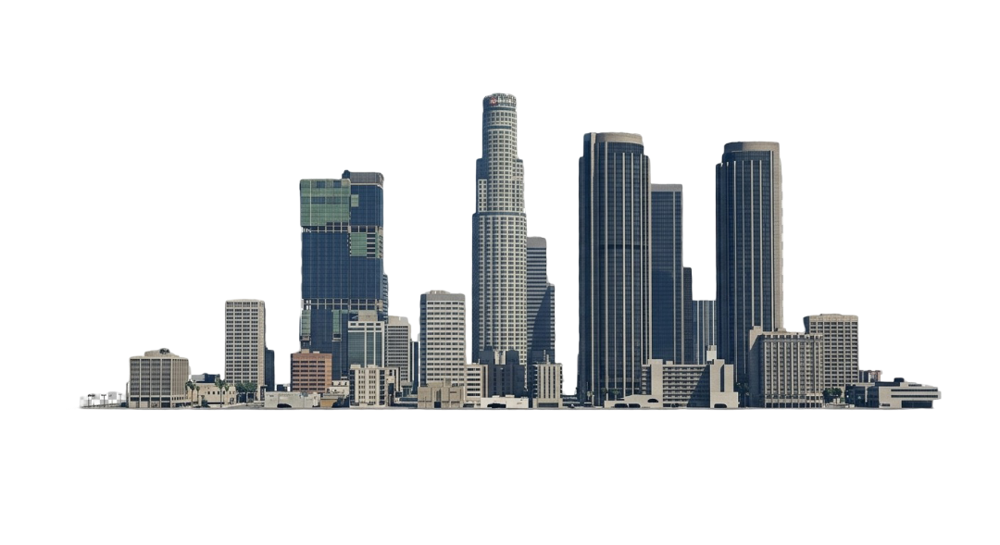

<div class="gta-container">

  <div class="sky" [class]="'sky ' + claseCielo()"></div>

  @if (solVisible() && esDeDia()) {
    <div class="astro sun" [style.left.%]="solX()" [style.top.%]="solY()"></div>
  }

  @if (lunaVisible() && esDeNoche()) {
    <div class="astro moon" [style.left.%]="lunaX()" [style.top.%]="lunaY()"></div>
  }

  

  <div class="content-overlay">
    <div class="time-card">
      <div class="time-icon">
        @if (esDeDia()) {
          <svg width="28" height="28" viewBox="0 0 24 24" fill="none" stroke="#fdb813" stroke-width="2" stroke-linecap="round" stroke-linejoin="round">
            <circle cx="12" cy="12" r="5"/>
            <line x1="12" y1="1" x2="12" y2="3"/>
            <line x1="12" y1="21" x2="12" y2="23"/>
            <line x1="4.22" y1="4.22" x2="5.64" y2="5.64"/>
            <line x1="18.36" y1="18.36" x2="19.78" y2="19.78"/>
            <line x1="1" y1="12" x2="3" y2="12"/>
            <line x1="21" y1="12" x2="23" y2="12"/>
            <line x1="4.22" y1="19.78" x2="5.64" y2="18.36"/>
            <line x1="18.36" y1="5.64" x2="19.78" y2="4.22"/>
          </svg>
        } @else {
          <svg width="28" height="28" viewBox="0 0 24 24" fill="none" stroke="#c0d0e0" stroke-width="2" stroke-linecap="round" stroke-linejoin="round">
            <path d="M21 12.79A9 9 0 1 1 11.21 3 7 7 0 0 0 21 12.79z"/>
          </svg>
        }
      </div>

      <div class="time-display">
        <span class="time-digits">{{ horaDisplay() }}:00</span>
        <span class="time-period">{{ esDeDia() ? 'AM' : 'PM' }}</span>
      </div>

      <div class="time-franja">{{ franja() }}</div>
    </div>
  </div>

</div>
